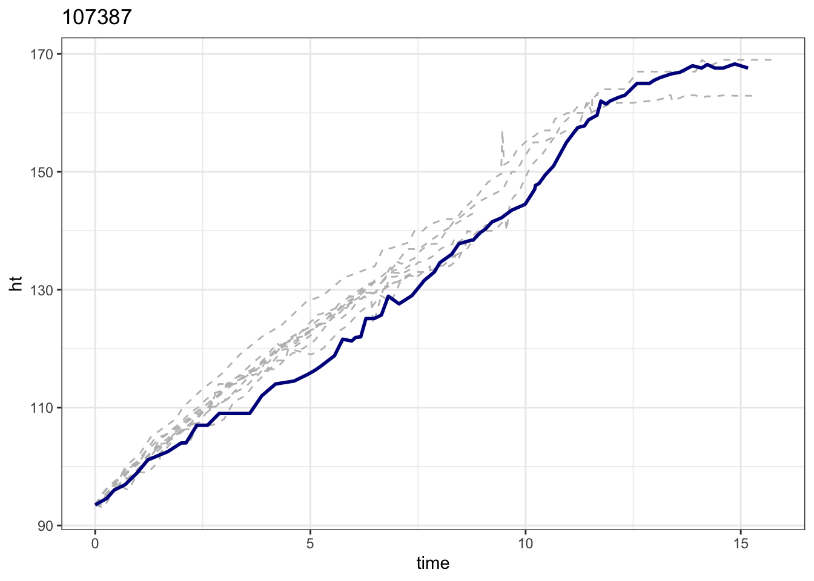
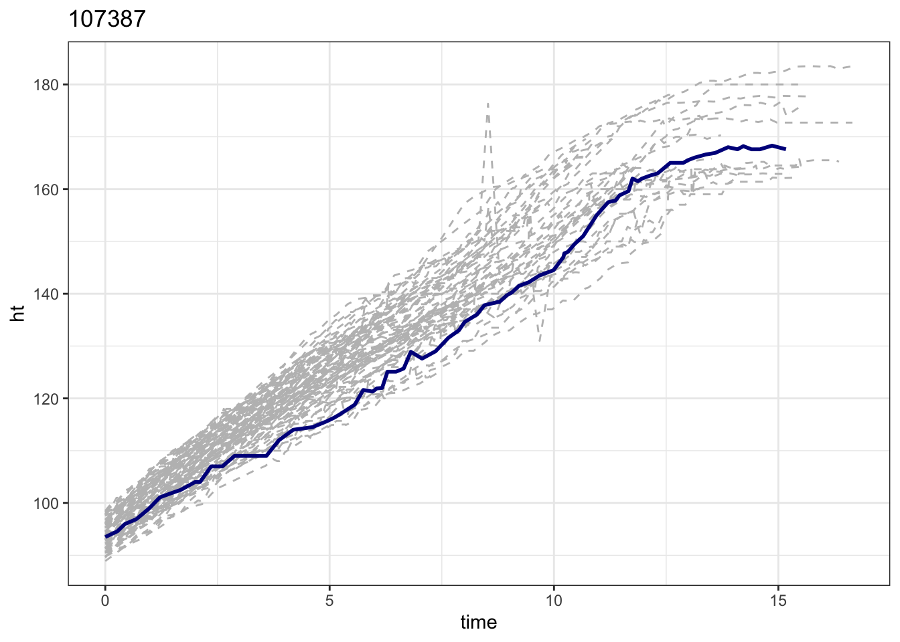
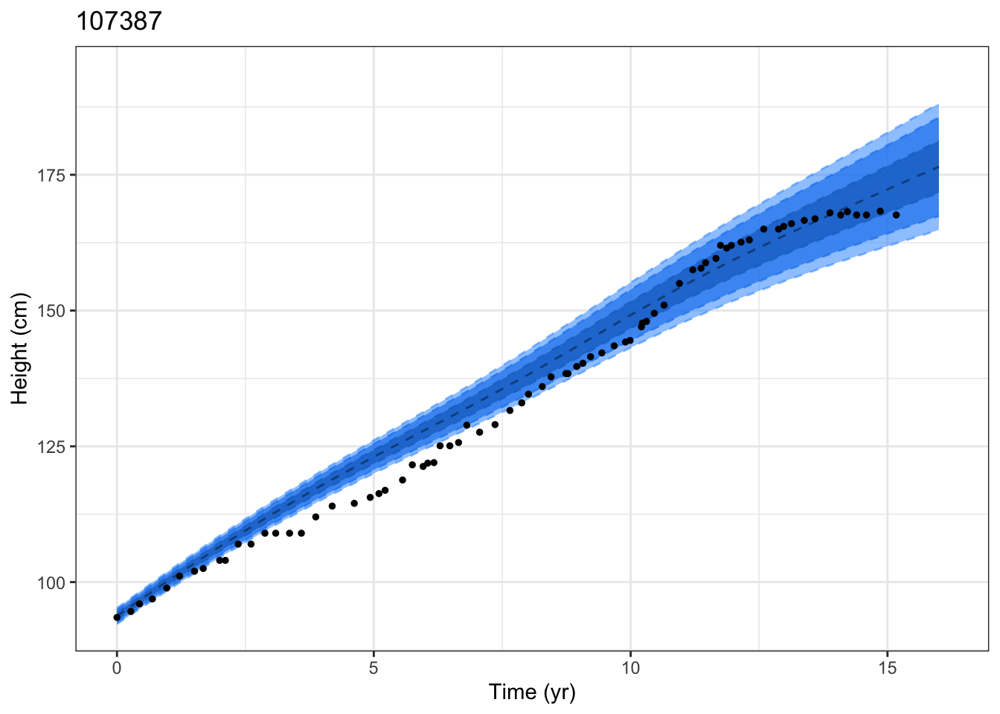
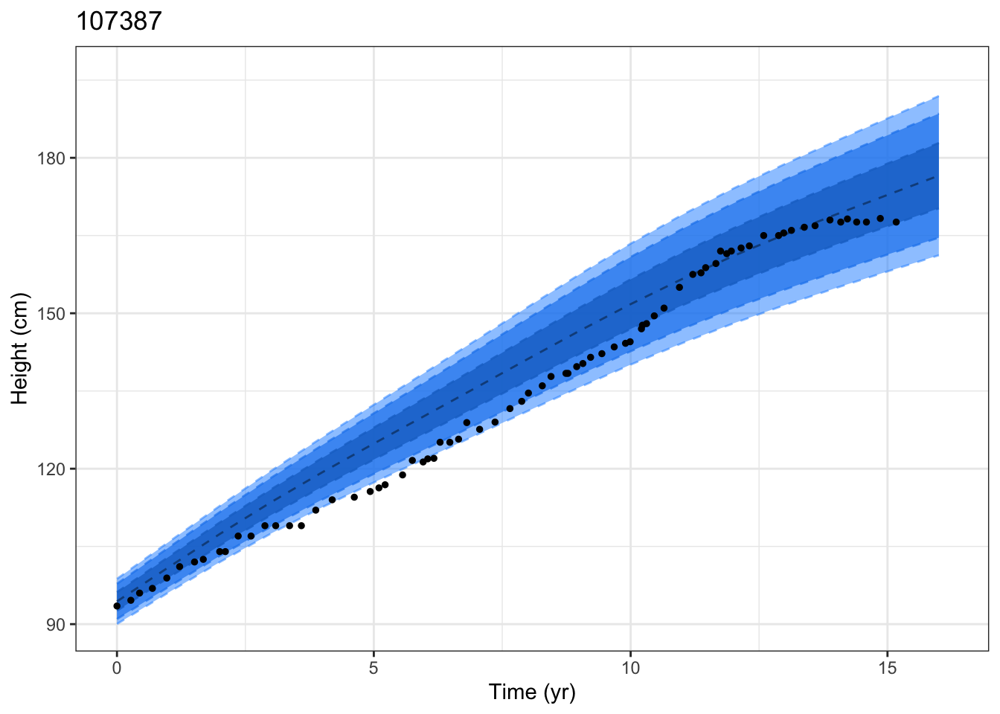

Code
devtools::load_all(quiet = TRUE)
Welcome to my package; this is a package developed for Randy Jin's MS thesisCode
# detectCores()
# library(furrr, quietly = TRUE)
# plan("multisession", workers = 3)devtools::load_all(quiet = TRUE)
Welcome to my package; this is a package developed for Randy Jin's MS thesis# detectCores()
# library(furrr, quietly = TRUE)
# plan("multisession", workers = 3)You can add options to executable code like this
First, fitting a brokenstick model with all the subjects in the training dataset. with outcome as heights.
bks_pred <-
brokenstick_prediction(
outcome = "ht",
time = "time",
id = "id",
dataset = train,
knots = c(5, 10, 12),
pred_time = c(2, 4, 6, 8, 10, 12),
choice = "predicted")Secondly, fitting the multivariate linear mixed model with brokenstick model predicted values.
lb_data <-
linear_brokenstick(
lm_formula = "`.pred` ~ time * sex + baseline",
bks_pred = bks_pred)Finally, matching up the target with the most similar training subjects and fitting a gamlss model.
## mahalanobis p value matching
pm_mhl_p09_107387 <-
pred_matching(
lb_data = lb_data,
obs_data = train,
match_methods = "mahalanobis",
match_alpha = 0.95,
gamlss_formula = "ht ~ cs(time, df = 3)",
gamsigma_formula = "~ cs(time, df = 1)",
match_plot = TRUE,
predict_plot = TRUE,
sbj = 107387)
## mahalanobis fixed matching number
pm_mhl_n10_107387 <-
pred_matching(
lb_data = lb_data,
obs_data = train,
match_methods = "mahalanobis",
match_num = 10,
gamlss_formula = "ht ~ cs(time, df = 3)",
gamsigma_formula = "~ cs(time, df = 1)",
match_plot = TRUE,
predict_plot = TRUE,
sbj = 107387)
## euclidean fixed matching number
pm_eld_n10_107387 <-
pred_matching(
lb_data = lb_data,
obs_data = train,
match_methods = "euclidean",
match_num = 10,
gamlss_formula = "ht ~ cs(time, df = 3)",
gamsigma_formula = "~ cs(time, df = 1)",
match_plot = TRUE,
predict_plot = TRUE,
sbj = 107387)
## single time point matching number
pm_sgl10_n10_107387 <-
pred_matching(
lb_data = lb_data,
obs_data = train,
match_methods = "single",
match_num = 10,
match_time = 10,
match_alpha = NULL,
gamlss_formula = "ht ~ cs(time, df = 3)",
gamsigma_formula = "~ cs(time, df = 1)",
match_plot = TRUE,
predict_plot = TRUE,
sbj = 107387)
pm_mhl_p09_107387$matching_trajectory-1.png)
head(pm_mhl_p09_107387$centiles_observed)head(pm_mhl_p09_107387$centiles_predicted)rbind("mahalanobis_p" = colMeans(pm_mhl_n10_107387$centiles_observed[, -1: -9]) %>% round(2),
"euclidean_n" = colMeans(pm_eld_n10_107387$centiles_observed[, -1: -9]) %>% round(2),
"mahalanobis_n" = colMeans(pm_mhl_p09_107387$centiles_observed[, -1: -9]) %>% round(2),
"singletime_n" = colMeans(pm_sgl10_n10_107387$centiles_observed[, -1: -9]) %>% round(2)) %>%
as.data.frame()The plots in Figure 1 show the results for mahalanobis distance outcomes with euclidean distance outcomes, for given individual ID107387. In Figure 1 (a) the trajectories for matching with euclidean distance while in Figure 1 (b) the trajectories matching with mahalanobis distance. In Figure 1 (c) the trajectories for matching with euclidean distance while in Figure 1 (d) the trajectories matching with mahalanobis distance.
pm_eld_n10_107387$matching_trajectory
pm_mhl_p09_107387$matching_trajectory
pm_eld_n10_107387$predictive_centiles
pm_mhl_p09_107387$predictive_centiles



id_all_10 <- unique(train$id) %>% head(20)
library(tictoc)
tic()
eld_p09_ss10 <-
map(id_all_10,
~plmlmm:::pred_matching(
lb_data = lb_data,
obs_data = train,
match_methods = "euclidean",
match_num = 30,
gamlss_formula = "ht ~ cs(time, df = 3)",
gamsigma_formula = "~ cs(time, df = 1)",
match_plot = TRUE,
predict_plot = TRUE,
sbj = .))
toc()
eld_p09_ss20_match <- map(eld_p09_ss10, "matching_trajectory") %>% compact()
eld_p09_ss20_pred <- map(eld_p09_ss10, "predictive_centiles") %>% compact()
eld_p09_ss20_match
## SS10 2.652 sec elapsed
## SS100 31.33 sec elapsed